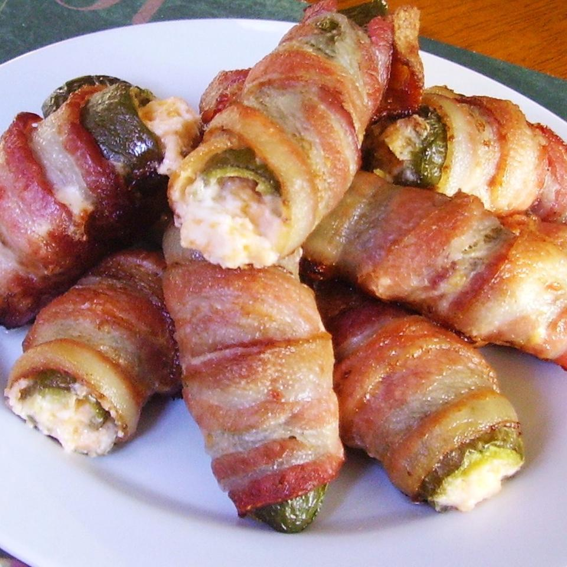

Jalapeno Poppers

Bacon-Wrapped Jalapeno Poppers
Better than your typical poppers. These poppers will make your tongue slap your brains out with the juiciest and most artery filling cholesterol and fat ever known to the gods themselves.
Ingredients are slim and prep time slimmer with a total start to finish time of 40 minutes you can make these for any occasion!
Ingredients
- 1/2 cup cream cheese
- 1/2 cup shredded sharp cheddar cheese
- 12 jalapeno peppers, halved lengthwise, seeds and membranes removed
- 12 slices of bacon
Steps
- Preheat oven to 400 degrees F (200 degrees C). Line a baking sheet with aluminum foil.
- Mix cream cheese and Cheddar cheese together in a bowl until evenly blended. Fill each jalapeno half with the cheese mixture. Put halves back together and wrap each stuffed pepper with a slice of bacon. Arrange bacon-wrapped peppers on the prepared baking sheet.
- Bake in the preheated oven until bacon is crispy, 25 to 35 minutes.